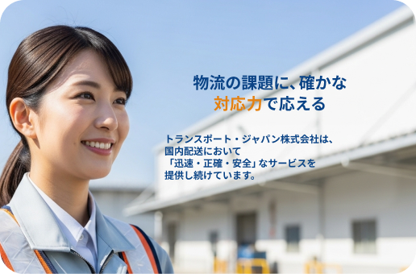
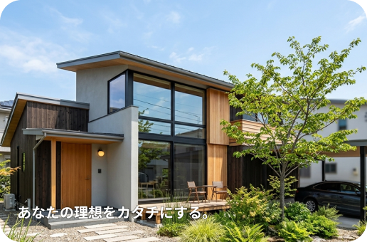
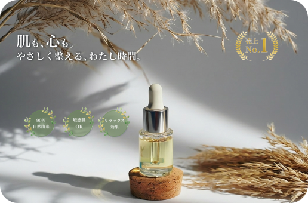
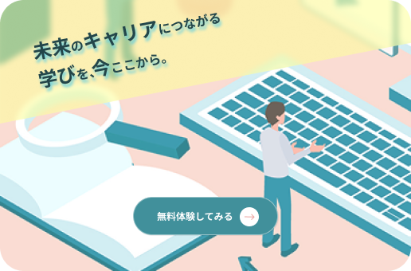

制作実績

物流会社のコーポレートサイト
BtoB向けのコーポレートサイトとして、信頼性と安心感を重視し、青を基調とした配色で設計しています。差し色に黄色を加えることで、重要な情報の視認性を高め、堅くなりすぎない印象に調整しています。 「ご利用の流れ」では背景に明暗のコントラストをつけ、視線の流れをコントロールすることで、直感的に理解しやすい構成としています。

工務店のコーポレートサイト
BtoC向けコーポレートサイトとして、木材を想起させる温かみのあるヘッダーカラーと、爽やかなグリーンを基調に設計しました。視覚的な心地よさと信頼感を両立し、スタイリッシュな印象にまとめています。 また、スマートフォンではカルーセルを採用し、限られた画面内でも情報を分かりやすく伝えられるよう工夫しました。

スキンケアLP
20代後半〜30代女性をターゲットとした、オーガニック系スキンケアブランドのLPです。明朝体の上品さと、丸みのあるゴシック体のやわらかさを組み合わせることで、ナチュラルで信頼感のある世界観を構築しました。 さらに、売上No.1のロゴはオリジナルで制作し、ブランドイメージに調和するよう細部まで調整しています。

オンライン学習・教育LP
20〜40代の社会人をターゲットにしたオンライン学習プログラムのLPをデザイン。若葉を想起させるグリーンとピンクを用い、親しみやすさと安心感のバランスを意識しました。 さらに、ファーストビューからサービス紹介までイラストを一貫して使用し、直感的な理解を促すことで、離脱率の軽減につなげています。